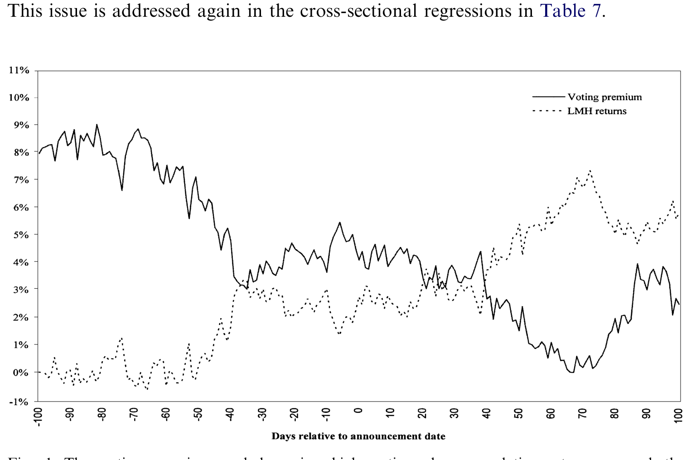
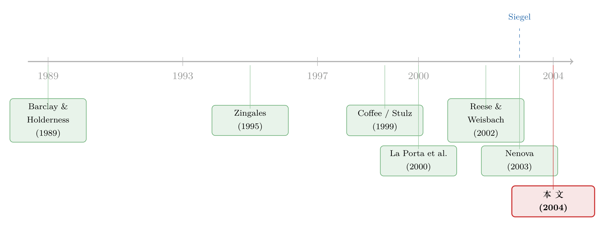

租一部更严的法律，老板手里的「控制权」就贬值了
本文读的是 Doidge (2004, Journal of Financial Economics)：把股票挂到纽约或纳斯达克的非美国双层股权公司，其「投票溢价」比不上市的同类公司低 43%——不上市的平均约 21%，上 Level 2/3 ADR 的只有约 12%，且这个差距在投资者保护越差的国家越大。这为「绑定假说」提供了一个干净的证据：到美国上市，确实摁低了控股股东的私人控制收益。
1 一个看不见的东西，怎么称重
先抛一个问题：控制一家公司，到底值多少钱？
在很多国家，答案大得惊人。法律对小股东的保护形同虚设，坐在控制位上的人可以名正言顺地把价值从公司里搬到自己兜里——关联交易、转移定价、占用资金，统统算在「控制权私利 (private benefits of control)」这个词底下。这也是 La Porta et al. (2000) 那条著名逻辑的起点：保护越差，外部股权越不值钱，公司越难融到资。
可问题在于，私利天生是「看不见」的。它见不得光，更不会写进财报。你怎么给一个公司不肯承认、也不愿披露的东西称重？
文献里给出过两把秤。一把是大宗股权的成交价：当一整块控股股权易手，买家愿意为「说了算」多付的那部分溢价，就是私利的影子（Barclay and Holderness, 1989；Dyck and Zingales, 2002；关于这一思路，可参见《控制权的私利，到底值多少钱？》）。另一把，也是本文用的这把，是双层股权 (dual-class shares) 公司里的「投票溢价 (voting premium)」。
道理很朴素。如果一家公司发了两类股票，现金流权利一模一样，唯一的区别是投票权，那么高投票股相对低投票股贵出来的那一截，量的就是「票」本身的价值——而票，恰恰是分配控制权的工具。票越值钱，说明控制权越能换来私利。
2 把「票值多少钱」写成一个比值
跟着 Zingales (1995)，本文把投票溢价定义成「一份投票权的价格」比「一份现金流权利的价格」：
其中 \(P_H\)、\(P_L\) 分别是高、低投票股的市场价，\(rv\) 是一份低投票股相对一份高投票股的投票数（归一化到 $[0,1]$）。
这个写法的好处，是把不同国家、不同「票数配比」的公司放到了同一把尺子上。加拿大的 GSW Inc. 高投票股一股 100 票、低投票股一股 1 票（\(rv=0.01\)）；CHC Helicopter 是 10 票对 1 票（\(rv=0.10\)）；巴西更极端，优先股干脆没有投票权（\(rv=0.0\)）。\(rv\) 进了分母，这些差异就被吸收掉了。论文也说明，换成更直白的 \((P_H-P_L)/P_L\)，结论不变。
这里有个微妙之处：投票溢价是小股东在二级市场上报出来的价格算出来的，而小股东根本消费不到私利。那它凭什么能代表私利？Zingales (1994, 1995) 的回答是——只要存在控制权争夺的可能性，手里的票就有价值，因为未来谁说了算并不确定，小股东的票也可能在某场争夺里变成关键筹码。所以投票溢价同时反映了私利的大小和控制权争夺的概率。这一点，后面会回来咬我们一口。
3 真正关键的一步：去美国「租」一部法律
铺垫到这儿，论文要问的核心问题终于浮出水面：如果一家外国公司把股票挂到美国去上市，它的控制权私利会不会因此变小？
为什么会变小？这就是 Coffee (1999, 2002) 和 Stulz (1999) 提出的「绑定假说 (bonding hypothesis)」。一家外国公司在纽交所或纳斯达克挂牌（Level 2 或 Level 3 ADR），就必须向 SEC 注册、按 20-F 表持续披露、把报表调到美国 GAAP、接受 10b-5 反欺诈条款、内幕交易规则、要约收购规则、「私有化」规则的约束。一句话：它把自己绑进了一套远比母国严厉的法律里，等于向小股东承诺「我以后没那么容易掏空你们了」。控股股东应当预期，到美国上市会削弱他攫取私利的能力。
这就像「租」了一部更严的法律来约束自己（这个比喻，恰好是 Siegel (2003) 那篇质疑文章的标题，可参见《租来的法律：把股票挂到纽约，真能管住自家的老板吗？》）。
于是检验思路顺理成章：比较「上了美国交易所的双层股权公司」和「没上的」，看前者的投票溢价是不是更低。
4 数据与样本
作者从 Datastream 的国家列表和退市列表里，筛出 1994–2001 年间所有双层股权公司，要求两类股都在母国公开上市、低投票股不可转换成高投票股、两类股都不拿固定股利。最终样本是 20 个国家、745 家非美国双层股权公司的面板，跨度 8 年。其中 137 家在美国交易，75 家是通过 Level 2/3 ADR 挂在纽交所或纳斯达克。
各国分布很不均衡：巴西 167 家、韩国 144 家撑起了半壁江山，澳大利亚和葡萄牙最少（3 家、4 家）。亚洲基本缺席——中国、日本、新加坡不允许差异投票权，印度在 Datastream 里没有双层股权公司，所以韩国成了样本里唯一的亚洲国家。观测单位是「公司-年」，每年至少要有 20 个周度观测。
一个容易被忽略、却很重要的时点细节：上市的时点和低投票股诞生的时点是错开的——只有 5% 的上市公司是在赴美上市前一年内才创设低投票股的。绝大多数公司是先有双层结构、好几年后才去美国上市。这缓解了「公司为了上市才临时拆出一类弱投票股」这种内生性担忧。
5 主要结果：43% 的落差，和一个干净的分水岭
第一组结果直截了当。不上市的公司，平均投票溢价约 21%；上了 Level 2/3 ADR 的公司，平均只有约 12%——低了 43%。这个差距在控制了公司层面（规模、杠杆、流动性等）和国家层面的决定因素之后，依然统计显著。更关键的是：差距的大小，与母国对小股东的保护程度负相关——保护越烂的国家，上市带来的投票溢价下降越大。这正是绑定假说最想看到的纹理：绑定对那些「本来最缺约束」的公司最管用。
但论文真正漂亮的一步，是找到了一条分水岭。
绑定机制只对那些真正被法律咬住的上市形式有效——也就是上纽交所/纳斯达克的 Level 2/3 ADR。而通过 Rule 144a（在 PORTAL 上交易）或 Level 1 ADR（在粉单上交易）赴美的公司，从公司治理和法律的角度看，几乎什么都没变：144a 发行人不必按《证券法》注册，因而不承担注册发行人的责任条款；144a 和 Level 1 都豁免于《交易法》的报告义务。
结果完全对上了：通过 144a 和 Level 1 赴美的公司，投票溢价并不低于不上市的公司。换句话说，单纯「在美国能买到」并不会压低私利；只有真正背上了美国法律义务的那种上市，才会。这一刀切下去，把「绑定」从一堆可能的「上市效应」里干净地剥了出来——它不是声望、不是流动性、不是关注度，就是法律约束本身。
6 事件研究：当上市消息传来，谁笑了
面板回归是横截面的比较，难免有人会问：会不会是「本来私利就低的好公司」自己选择了去美国上市？为回应这个，作者做了一个围绕上市公告日的事件研究，只看那些赴纽交所/纳斯达克的公司。
第一，公告前 100 天的平均投票溢价，显著高于公告后 100 天——上市这件事本身，把投票溢价摁了下去。
第二，也是最有意思的一点。尽管绝大多数双层股权公司只把低投票股那一类挂到美国，但公告 11 天窗口里，两类股都涨了：高投票股平均涨 0.57%，低投票股平均涨 1.69%。而且低投票股涨得显著更多——两者的收益差是 1.12%。

Figure 1: The voting premium and low-minus-high voting class cumulative returns around the
第三，横截面回归显示：这个「低减高」的收益差，与母国投资者保护程度负相关，且不管是哪一类股被挂到美国、也不管公司是否来自新兴市场，结论都成立。
这三点叠在一起，讲了一个自洽的故事：上市把一部分本来被控股股东攥着的私利，还给了全体股东。低投票股（小股东持有的那一类）因为「被保护」而涨得更多；但高投票股也涨，因为整块蛋糕——公司价值——做大了。控股股东失去的是私利，换来的是手里股权价值的上升（Doidge et al., 2003）。只要后者大于前者，他就愿意去上市。反过来，这也解释了：为什么有那么多够格的外国公司偏偏不去美国上市——它们的控股股东心里那本账，算出来私利的损失大于上市的收益。
7 文献脉络
把这条线索拉直来看，它是两股潮流汇到一处的产物。
一股是「怎么给控制权私利称重」。Levy (1983)、Lease et al. (1983, 1984) 最早用差异投票权股票做文章，Zingales (1994, 1995) 把投票溢价做成了一套成熟的度量，并算出意大利的投票溢价高达 82%、而美国只有 10.5%；另一支用大宗股权成交价（Barclay and Holderness, 1989；Dyck and Zingales, 2002）。Nenova (2003) 把这套度量推到 18 国，发现小股东保护变量能解释 68% 的控制价值跨国差异。
另一股是「法律与绑定」。La Porta et al. (1998, 1999, 2000) 奠定了「法律保护决定公司价值」的框架；Coffee (1999, 2002) 和 Stulz (1999) 在此之上提出绑定假说。随后是一串经验证据：Reese and Weisbach (2002) 发现赴美上市后、弱保护国家的公司能在母国融到更多股权；Doidge et al. (2003) 发现跨境上市公司估值更高、且差距与母国保护负相关；Lang et al. (2003) 发现上市后信息环境改善。当然也有质疑者——Siegel (2003) 直言「租来的美国证券法」未必管得住人。
本文站在这两股潮流的交点上：它第一次把「投票溢价」这把私利的尺子，直接对准了「绑定假说」这个命题，并用 144a/Level 1 这条对照线，把法律约束从其他上市效应里隔离了出来。

8 评论与延伸（Q&A + 研究方向）
(a) 几个可能的疑问
Q：投票溢价和「大宗股权溢价」量的是同一个东西吗？
不完全是。大宗股权溢价是从一笔控股权交易的成交价里算的，里面混进了协同效应、买卖双方议价能力等噪声；投票溢价是从二级市场的两类股价里算的，干净一些，但它是小股东报出的价、且同时含了「控制权争夺概率」。两者是互补的尺子，Nenova (2003) 与 Dyck and Zingales (2002) 用两套方法得到了相近结论，算是交叉验证。
Q：21% 比 12%，会不会只是「好公司自己跑去上市」的选择效应？
这是最该担心的点。作者的三道防线是：(1) 控制了公司和国家层面的决定因素后差距仍在；(2) 事件研究显示同一家公司上市前后投票溢价下降，把跨公司选择换成了公司内比较；(3) 论文称结果对自选择的潜在偏误稳健。不过事件研究样本小、窗口短，选择效应不能说被彻底排除，只能说被大幅削弱。
Q：144a/Level 1 看不到效应，这到底是好消息还是「无功能的噪声」？
是好消息，而且是全文最关键的识别。如果连「在美国能买到但没有法律义务」的上市也压低了投票溢价，那就说明在起作用的是流动性、关注度之类的东西，绑定假说就立不住。正因为这条对照线没有效应，才能把因果归到「法律约束」而非「美国市场」本身。
Q：如果上市削弱了控股股东的私利，高投票股不是应该跌吗？为什么也涨了？
因为有两股力量。私利从控股股东转移给全体股东，这会让低投票股相对受益（它涨 1.69%、高投票股只涨 0.57%，差 1.12%）；但同时公司整体价值因治理改善而上升，这把两类股一起抬高。净效应是「都涨、但低投票股涨更多」，与转移 + 做大蛋糕的故事一致。
Q：投票溢价是小股东定的价，凭什么代表控股股东消费的私利？
严格说它代表的是「投票权的市场价值」，等于私利大小乘以控制权易主的概率。在美英之外的多数国家控制权争夺概率低，所以投票溢价的跨国差异可以大致解读为私利的差异。这是个近似，论文也坦承这一点。
Q：样本里巴西、韩国占了一大半，结论会不会被这两国绑架？
是潜在隐患。好在核心结论——「差距与投资者保护负相关」「效应不分新兴/发达市场」——是在多国横截面上识别的，且事件研究的收益差结论明确写明「无论是否来自新兴市场都成立」，一定程度上缓解了单国驱动的担忧。
(b) 几个可能的研究问题与提案
1. 绑定会不会也压低「债」的成本？
【经济故事】绑定假说全篇讲的是股权和私利，但削弱掏空、改善披露，受益的不只是小股东，还有债权人——掏空越难，违约回收率越高。那么跨境上市是否压低了公司债的信用利差？ 【可行性】中。需要把双层股权样本匹配到母国/美元债的二级利差（TRACE 覆盖美元债，母国债较难），用上市公告做事件研究。难点是债券样本与双层股权样本的交集可能很小，识别要靠 144a/Level 1 对照线复刻本文设计。
2. 外资持有人结构，是不是绑定效应的「传导带」？
【经济故事】上市改善的是法律约束，但真正盯着控股股东的，可能是随之而来的美国机构投资者。如果绑定效应主要由「美国机构持股上升」中介，那它就不只是法律、更是监督。 【可行性】中高。可用 13F/ FactSet 持股，做上市前后外资持股变化与投票溢价下降的中介分析；与《外资真是「蝗虫」吗？》的跨国外资数据思路相通。识别仍要处理「持股与上市同时内生」的问题。
3. 退市与「解绑」：当公司主动撤回美国上市，私利会回来吗？
【经济故事】绑定假说的镜像检验。2007 年后 SEC 放宽退市（Rule 12h-6）造成了一波外国公司主动退市。如果绑定是真的，退市应当抬高投票溢价——这是比上市更干净的反向实验。 【可行性】高。退市事件外生性更强、时点清晰，可直接套用本文的事件研究框架，对投票溢价做退市前后比较。数据可得性好，是一个相对 doable 的复制 + 反转设计。
4. 双层股权与债券契约的替代关系。
【经济故事】法律绑定与合约绑定可能互为替代——在弱保护国家，债权人或许靠更严的债券契约（covenant）自我保护；一旦公司赴美上市、法律绑定上来了，新发债的契约强度会不会反而放松？ 【可行性】中。需要契约层面的细粒度数据（如 DealScan/债券募集说明书的 covenant index），与上市时点对齐。难点是契约文本解析与跨国可比性，工作量大但方向新。
9 我的判断
这篇论文的贡献，在我看来是把一个抽象命题做成了可证伪的经验问题。「到美国上市能改善治理」这句话人人会说，但它太滑——你很难把它和流动性、关注度、声望区分开。Doidge 的高明之处，是用「投票溢价」这把现成的私利尺子，再用 144a/Level 1 这条「有上市、无法律义务」的对照线，硬生生把法律约束这一个机制从噪声里夹了出来。43% 的落差、与投资者保护负相关的纹理、事件研究里两类股「都涨但低投票股涨更多」的细节——三块证据彼此咬合，故事讲得很圆。
对识别，我仍有两点保留。其一，自选择没有被彻底关死：事件研究样本小、窗口短，「好公司去上市」与「上市让公司变好」在统计上仍难完全切开。其二，投票溢价 = 私利 × 控制权争夺概率，赴美上市同时可能改变了后者（美国市场让控制权争夺更可行），那么投票溢价下降里有多少是「私利变小」、多少是「争夺概率变了」，本文没有完全拆开——而这两条对福利的含义并不相同。
后续我最想看到的，是反向实验：2007 年退市新规之后那批主动「解绑」的公司，投票溢价有没有回弹？如果绑定是真的，撤回上市就该让控股股东的私利失而复得。这会是比上市更外生、也更有说服力的一次检验。
参考文献
Barclay, M., Holderness, C. (1989). Private benefits from control of public corporations. Journal of Financial Economics 25(2), 371–395.
Coffee, J. (1999). The future as history: the prospects for global convergence in corporate governance and its implications. Northwestern University Law Review 93, 641–708.
Coffee, J. (2002). Racing towards the top? The impact of cross-listings and stock market competition on international corporate governance. Columbia Law Review 102, 1757–1831.
Doidge, C. (2004). U.S. cross-listings and the private benefits of control: evidence from dual-class firms. Journal of Financial Economics 72(3), 519–553.
Doidge, C., Karolyi, A., Stulz, R. (2003). Why are foreign firms listed in the U.S. worth more? Journal of Financial Economics (Article in Press).
Dyck, A., Zingales, L. (2002). Private benefits of control: an international comparison. Journal of Finance (forthcoming).
La Porta, R., Lopez-de-Silanes, F., Shleifer, A., Vishny, R. (2000). Investor protection and corporate governance. Journal of Financial Economics 58(1), 1–27.
Lang, M., Lins, K., Miller, D. (2003). ADRs, analysts, and accuracy: does cross-listing in the U.S. improve a firm's information environment and increase market value? Journal of Accounting Research 41(2), 317–345.
Nenova, T. (2003). The value of corporate voting rights and control: a cross-country analysis. Journal of Financial Economics 68(3), 325–351.
Reese, W., Weisbach, M. (2002). Protection of minority shareholder interests, cross-listings in the United States, and subsequent equity offerings. Journal of Financial Economics 66(1), 65–104.
Siegel, J. (2003). Can foreign firms bond themselves effectively by renting U.S. securities laws? Unpublished working paper, MIT.
Stulz, R. (1999). Globalization, corporate finance, and the cost of capital. Journal of Applied Corporate Finance 12(3), 8–25.
Zingales, L. (1994). The value of the voting right: a study of the Milan Stock Exchange experience. Review of Financial Studies 7(1), 125–148.
Zingales, L. (1995). What determines the value of corporate votes? Quarterly Journal of Economics 110(4), 1047–1073.